The cover of New Youth (Xin qingnian), vol. 2, no. 1, September 1916, the first issue under its new name; the small line at the foot says it was "formerly Youth Magazine." From the 1954 facsimile edition. Public domain, Wikimedia Commons.
Q6 story · Shanghai · September 1915
In 1915 a New Magazine Told Young Chinese, "Youth Is Like Early Spring"
The first issue of Youth Magazine (Qingnian zazhi), Shanghai, 15 September 1915. From 1916 it was called New Youth. Public domain, Wikimedia Commons.
On 15 September 1915 Chen Duxiu launched Youth Magazine in Shanghai.
Chen wrote: "Youth is like early spring, like the rising sun … like a newly sharpened blade."
In September 1916 the magazine took a new name: New Youth.
Sources: Ebrey, Ch. 24, p. 420; Chow Tse-tsung, The May Fourth Movement (1960). Image: Qingnian zazhi, vol. 1, no. 1, 1915.
Q6 story · The editor · 1879–1915
Its Editor, Chen Duxiu, Had Passed the First Level of the Old Exams, Then Turned Against the Old Learning
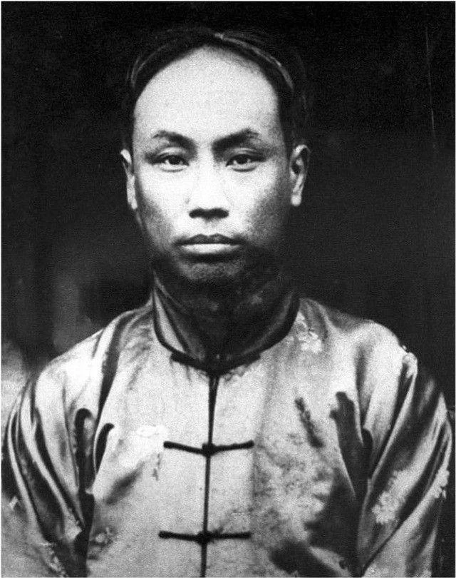
Chen Duxiu (1879–1942) as a young man; undated. Public domain, Wikimedia Commons.
Born 1879 in Anhui, he passed the county examination in 1896, at age 17 · Ch. 14 L3 · the exams ↗
In 1897 he failed the provincial exam in Nanjing and gave up on the system.
He studied in Japan several times (Ebrey adds France) and took part in the 1911 revolution.
By 1915 he was, Ebrey writes, "a zealous advocate of individual freedom."
Names in This Story
Chen Duxiueditor of New Youth, 1879–1942; pronounced "chuhn doo-shyow"
New YouthXin qingnian, the magazine; Youth Magazine in 1915–16
Sources: Ebrey, Ch. 24, p. 420; Howard L. Boorman, ed., Biographical Dictionary of Republican China (1967); Yves Chevrier, "De l'occidentalisme à la solitude," Études chinoises 3 (1984). Image: undated.
Q6 story · The attack on Confucius · 1915–1919
Chen Told the Young to Throw Off "Slavish Morality" and Choose Science and Democracy
Chen's first essay urged the young to be "independent, not servile" and "scientific, not imaginative."
He called "loyalty, filial piety, chastity, and righteousness" nothing but "a slavish morality."
Confucianism, he wrote, was incompatible with "the new society, and the new state."
In 1919 he summed up his program in two names: "Mr. Democracy" and "Mr. Science."
"Loyalty, filial piety, chastity, and righteousness" are "a slavish morality."
Chen Duxiu, 1916, in Teng and Fairbank, China's Response to the West, p. 241, quoted in Ebrey, p. 420
Sources: Ebrey, Ch. 24, p. 420; Teng and Fairbank, China's Response to the West (1971); Chow, The May Fourth Movement (1960).
Q6 concept · The New Culture Movement
Concept: The New Culture Movement Set Out to Replace Confucian Values with Modern Ones
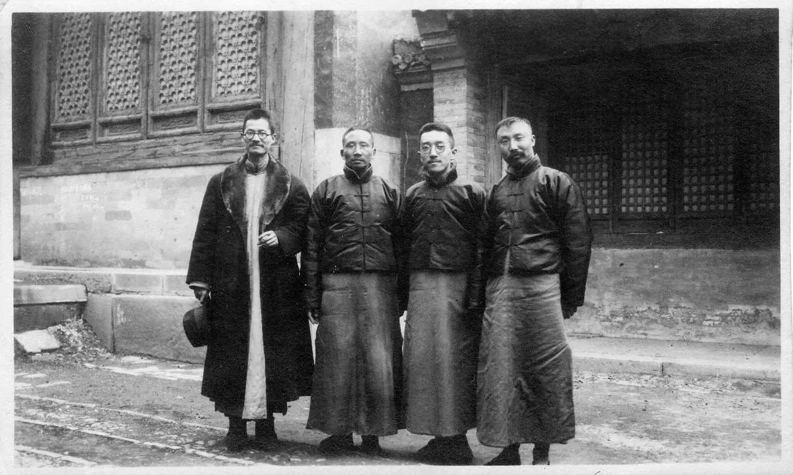
Four leaders of the movement in Beijing, 14 March 1920: Jiang Menglin, Cai Yuanpei, Hu Shi, and Li Dazhao. Public domain, Wikimedia Commons.
Concept
New Culture Movement
The campaign of the late 1910s, led by teachers and writers at Beijing University, to replace Confucian values and the classical written language with science, democracy, individual freedom, and writing in everyday speech.
Its base was Beijing University; its voice was New Youth.
Its goals: science, democracy, individual freedom, and the vernacular.
Its enemies: Confucian family rule, "blind adherence to tradition," and the classical language.
At Beijing University, Cai Yuanpei Made Chen Dean, and the Radicals Found a Home
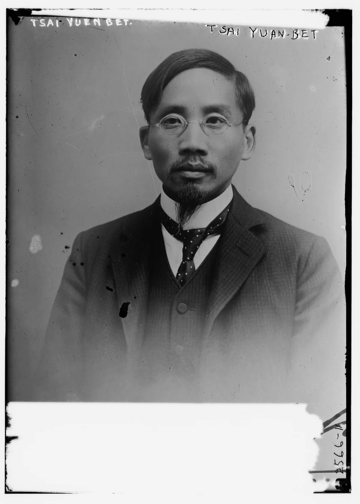
Cai Yuanpei (1868–1940), president of Beijing University from 1917. Bain News Service, about 1910, Library of Congress. Public domain, Wikimedia Commons.
In January 1917 Cai Yuanpei, a top examination graduate, became president of Beijing University.
He opened it to all schools of thought, from old-style classicists to anarchists.
Within weeks he made Chen Duxiu dean of letters, and New Youth moved to Beijing.
Hu Shi, Li Dazhao, and Lu Xun's brother Zhou Zuoren joined the faculty or wrote for the magazine.
Names in This Story
Cai Yuanpeipresident of Beijing University from 1917; pronounced "tsye ywen-pay"
Beijing UniversityBeida, also called Peking University; founded 1898
Sources: Ebrey, Ch. 24, p. 420; Timothy B. Weston, The Power of Position: Beijing University, Intellectuals, and Chinese Political Culture (2004). Image: Bain News Service, about 1910.
Q6 story · Hu Shi · 1917
Hu Shi Said, "A Dead Language Can Never Produce a Living Literature"
Hu Shi studied in the United States from 1910 to 1917, at Cornell and then Columbia.
In January 1917 New Youth printed his "modest proposals" for reforming literature.
He argued that Chinese should write the language people actually spoke.
That autumn, aged 25, he joined the Beijing University faculty.
Names in This Story
Hu Shischolar and champion of the vernacular, 1891–1962; pronounced "hoo shir"
Sources: Ebrey, Ch. 24, pp. 420–421; Jerome B. Grieder, Hu Shih and the Chinese Renaissance (1970). Image: 1922.
Q6 concept · The vernacular
Concept: Vernacular Writing Meant Writing the Way People Spoke
Concept
Vernacular (baihua)
The written form of everyday spoken Chinese, as opposed to classical Chinese (wenyan), the terse literary language of the classics that only the educated could read.
Classical: 吾欲往 (wu yu wang). Vernacular: 我要去 (wo yao qu). Both mean "I want to go." · Ch. 14 L4 · vernacular ↗
Classical Chinese was the same across China but sounded like no one's speech.
Hu Shi argued that a national literature in the vernacular would create a standard spoken language, as in France and Germany.
Sources: Ebrey, Ch. 24, pp. 420–421; John DeFrancis, The Chinese Language: Fact and Fantasy (1984).
Q6 story · The vernacular wins · 1918–1922
By 1918 the Magazine Was in the Vernacular, and in 1920 the Schools Followed
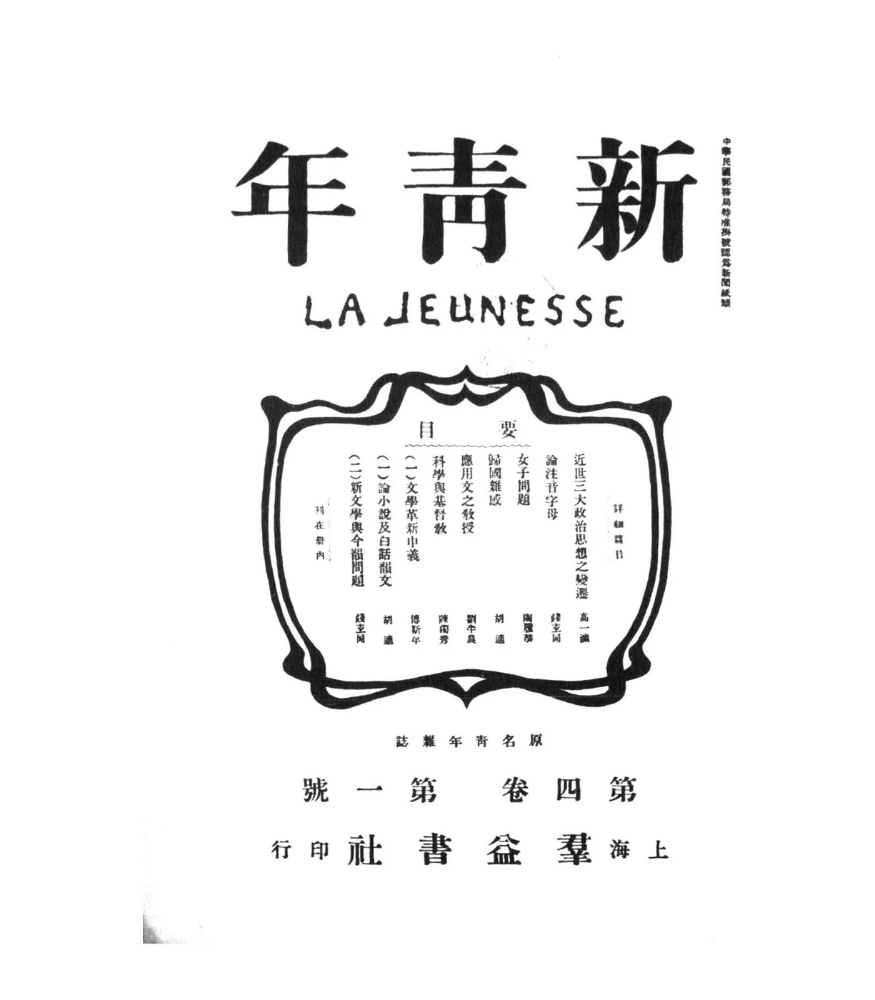
New Youth, vol. 4, no. 1, January 1918, the first issue written entirely in the vernacular. From the 1954 facsimile edition. Public domain, Wikimedia Commons.
From January 1918 New Youth was written entirely in the vernacular.
By 1919, hundreds of new magazines for young readers had appeared.
In January 1920 the Ministry of Education ordered vernacular textbooks for the first two grades.
By 1922 the classical textbooks were to be phased out of the elementary schools.
Sources: Ebrey, Ch. 24, pp. 421–422; Chow, The May Fourth Movement (1960). Image: Xin qingnian, vol. 4, no. 1, 1918.
Q6 story · Visitors from the West · 1919–1922
Dewey, Russell, and Sanger Came to Lecture, and Dewey Found the Students Hungry for New Ideas
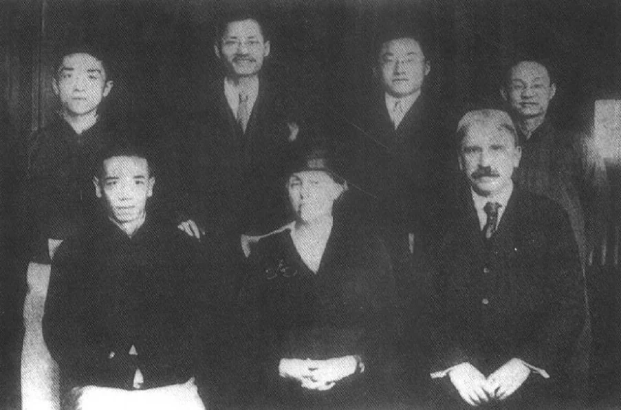
John Dewey (seated, right) and his wife Alice in Shanghai, 1919. Standing behind: Hu Shi, Jiang Menglin, Tao Xingzhi, and Zhang Zuoping. Public domain, Wikimedia Commons.
The philosopher John Dewey arrived at the end of April 1919 and lectured across China for two years.
Bertrand Russell lectured in 1920–21; Margaret Sanger spoke in Beijing in 1922.
Dewey: no country had students "so unanimously and eagerly interested in what is modern and new."
Hu Shi, Dewey's former student, often translated his lectures.
Sources: Ebrey, Ch. 24, p. 426; Chow, The May Fourth Movement (1960), p. 183; Hu Danian, China and Albert Einstein (2005). Image: Shanghai, 1919.
Q6 story · The pushback · 1920
Not Everyone Agreed: Liang Qichao Now Feared China Would Lose Its "National Essence"
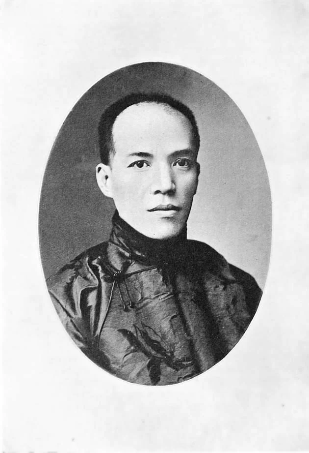
Liang Qichao (1873–1929), about 1917, when he served briefly as minister of finance. Public domain, Wikimedia Commons.
Liang Qichao, the great reformer of 1898, toured Europe in 1918–1920, just after the war.
He came home saying the West's faith in science had led to ruin.
Ebrey: some now found Western culture "too materialistic."
Sources: Ebrey, Ch. 24, p. 426; Joseph R. Levenson, Liang Ch'i-ch'ao and the Mind of Modern China (1953). Image: about 1917.
Reading Guide · Review Question 6
Reading Guide · Review Question 6
Review Question 6
The New Culture Movement: What were the core intellectual objectives of the New Culture Movement centered at Beijing University, and how did its leaders attempt to sever China from its Confucian past?
In 1904 he entered the medical school at Sendai, the only Chinese student there.
Names in This Story
Lu Xunpen name of Zhou Shuren, writer, 1881–1936; pronounced "loo shyun"
Sources: Ebrey, Ch. 24, p. 422; Lu Xun, Preface to Call to Arms (1922); Jon Eugene von Kowallis, "Lu Xun," in Dictionary of Literary Biography (2007). Image: Tokyo, 1903.
Q7 story · Sendai, Japan · about 1906
In Class, Lu Xun Later Wrote, a Lantern Slide Showed Chinese Calmly Watching a Chinese Man About to Be Executed
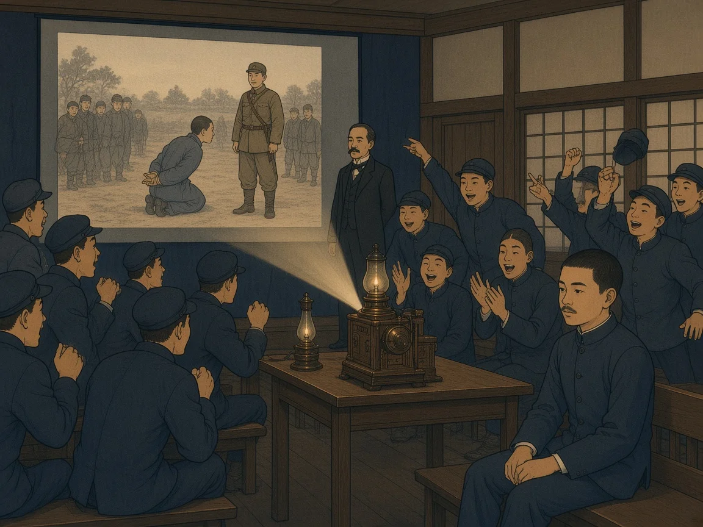
AI-generated illustration in a woodblock-print style, made for this deck: a lecture hall at the Sendai medical school about 1906. A brass-and-wood magic lantern throws a dim war scene onto a screen: a bound Chinese man, Chinese onlookers, and a Japanese soldier. Japanese students in dark uniforms cheer and raise their arms; in the foreground, the one Chinese student sits still and silent. An interpretation, not a historical source.
After class, his teacher sometimes showed lantern slides of the Russo-Japanese War.
One slide showed a bound Chinese man, said to be a Russian spy, about to be executed by Japanese soldiers.
Other Chinese stood around him, "strong fellows" who looked "completely apathetic."
In 1906 he left medicine: "The most important thing … was to change their spirit."
Sources: Ebrey, Ch. 24, p. 422; Lu Xun, Preface to Call to Arms (1922), trans. Yang Xianyi and Gladys Yang. Image: AI-generated illustration (2026).
Q7 story · Beijing · April–May 1918
In May 1918 New Youth Printed Lu Xun's First Story, "Diary of a Madman": Your Primary-Source Reading
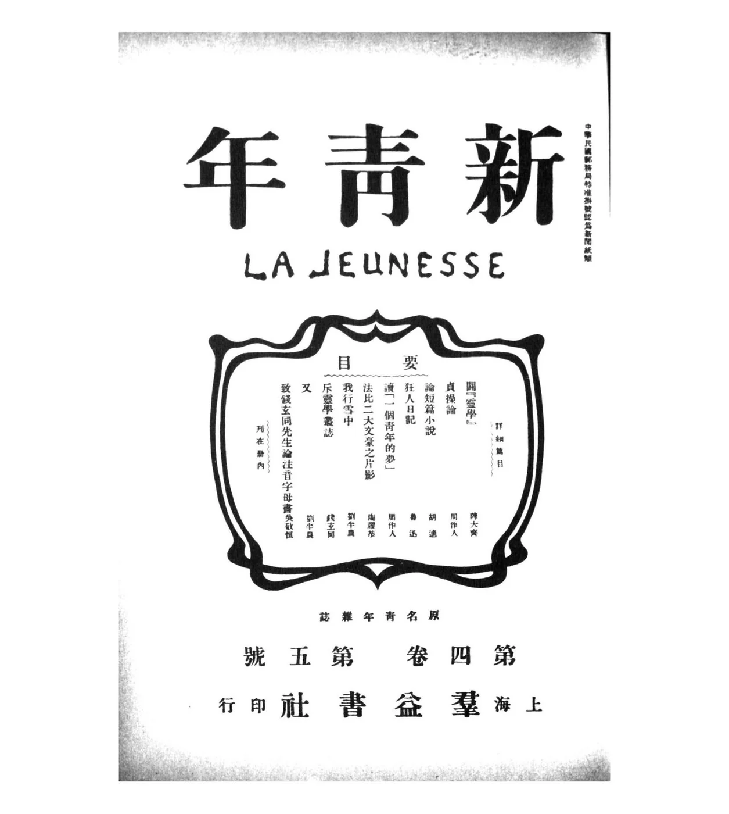
New Youth, vol. 4, no. 5, May 1918, the issue that printed "Diary of a Madman" (Kuangren riji). From the 1954 facsimile edition. Public domain, Wikimedia Commons.
For years in Beijing, Zhou Shuren had been a quiet ministry official copying old inscriptions.
A New Youth editor, Qian Xuantong, kept asking him to write.
He wrote the story in April 1918; it was the first time he signed himself "Lu Xun."
Sources: Ebrey, Ch. 24, p. 422; Lu Xun, Preface to Call to Arms (1922). Image: Xin qingnian, vol. 4, no. 5, 1918.
Q7 · Primary source · Before you read
Before You Read "Diary of a Madman": Five Things to Watch For
1. The short opening paragraph is in classical Chinese; the diary is in the vernacular. Who speaks in each, and why the difference?
2. Track the eyes: who looks at the diarist, and how does he read their looks?
3. When the diarist studies a history book, what words does he say he sees? Copy them exactly.
4. Watch for a real man's name from 1907; you will meet him again in this lecture.
5. Read the last line twice. Is it hope or despair? · read the story ↗
Sources: Ebrey, Ch. 24, p. 422; Lu Xun, "A Madman's Diary," trans. Yang Xianyi and Gladys Yang, in Selected Stories of Lu Hsun (1960).
Q7 story · Beijing · 1921–1922
In "The True Story of Ah Q," a Village Nobody Called Every Humiliation a Victory
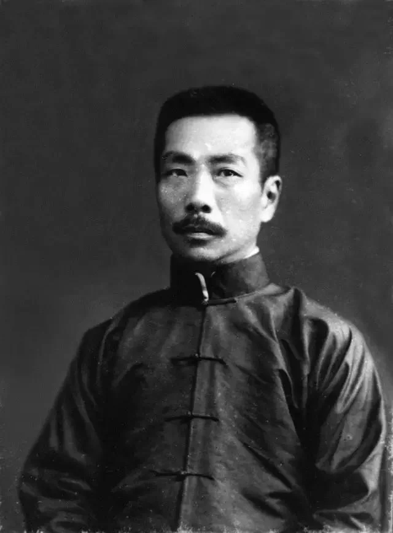
Lu Xun in Beijing, 28 May 1925, in a photograph taken for the Russian translation of "The True Story of Ah Q." Public domain, Wikimedia Commons.
The story ran in a Beijing newspaper supplement from December 1921 to February 1922.
Ah Q is a poor laborer who is beaten, mocked, and cheated.
Each time, he tells himself he has really won: his "spiritual victory."
Within a few years it was translated into Russian, French, English, and Esperanto.
Names in This Story
Ah Qhero of Lu Xun's 1921–22 story; pronounced "ah kyoo"
Sources: Ebrey, Ch. 24, p. 422; William A. Lyell, Lu Xun's Vision of Reality (1976). Image: Beijing, 1925.
Q7 concept · National character
Concept: "National Character" Was the Idea That a People's Habits Explain Its Fate
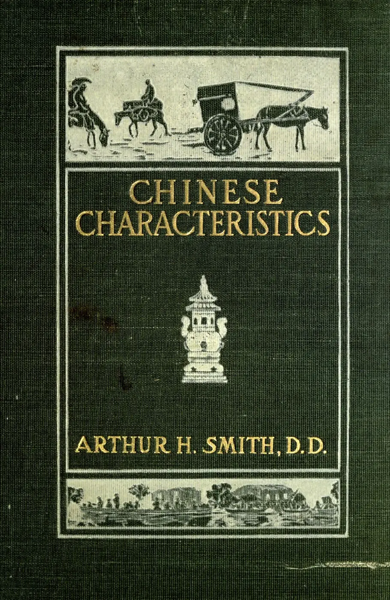
Chinese Characteristics by the American missionary Arthur H. Smith (1894). A Japanese translation appeared in 1896, and Lu Xun read it. Public domain, Wikimedia Commons.
Concept
National character
The belief, common around 1900, that each nation has a shared set of habits and attitudes, and that these, more than laws or leaders, decide whether it rises or falls.
Western writers like Arthur Smith listed Chinese "characteristics" such as "indifference to accuracy."
Liang Qichao and others turned the idea around: change the people, and you save the nation.
Lu Xun used fiction to show the habits he blamed: passivity, self-deception, cruelty to the weak.
Sources: Ebrey, Ch. 24, pp. 422–423; Lydia H. Liu, Translingual Practice (1995). Image: Arthur H. Smith, 1894.
Q7 story · Beijing · February 1925
In 1925 Lu Xun Still Blamed China's Own Flaws: The Republic Was "Still the China of Those Earlier Ages"
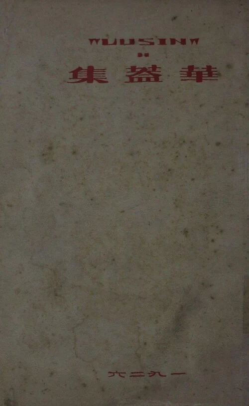
Huagai ji (1926), the collection of Lu Xun's essays that includes "Sudden Notions." Public domain, Wikimedia Commons.
In February 1925 Lu Xun compared the republic with the last, cruel years of the Ming.
"It seems as if China alone is untouched by the passage of time."
He blamed "clever people" who always adapt and "always come out on top."
Yet he hoped: no one could say "the national character will never change."
Sources: Ebrey, Ch. 24, pp. 422–423 (Documents: Lu Xun's "Sudden Notions," trans. Yang Xianyi and Gladys Yang). Image: Beixin shuju, 1926.
Reading Guide · Review Question 7
Reading Guide · Review Question 7
Review Question 7
Lu Xun's Cultural Critique: How did the literary works of Lu Xun serve as a diagnosis of China's "national character" during the early Republic?
Sources: Ebrey, Ch. 24, p. 426; Dorothy Ko, Cinderella's Sisters: A Revisionist History of Footbinding (2005). Image: Beijing, 1900s.
Q10 story · The reform societies · 1890s–1930
From the 1890s, Men Pledged to Leave Their Daughters' Feet Unbound and Marry Their Sons to Natural-Footed Women
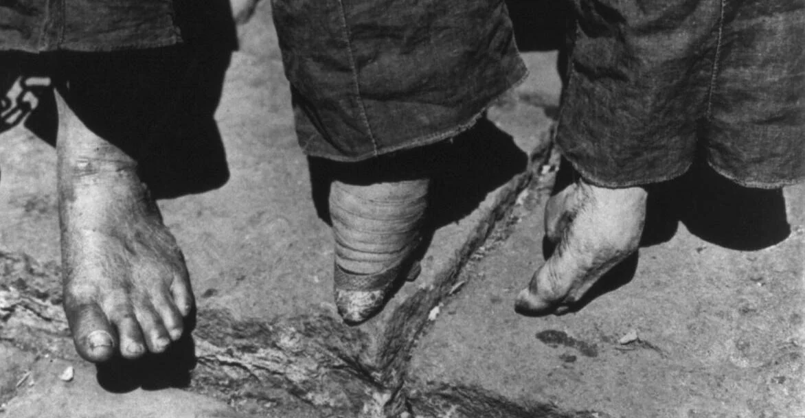
Natural and bound feet compared, a photograph by C. H. Graves, about 1902. Public domain, Wikimedia Commons.
The first anti-foot-binding societies of the 1890s were made up of men.
Members promised to leave daughters' feet natural and find sons natural-footed wives.
Campaigners said bound feet crippled a large part of China and held it back.
After 1930, young girls had their feet bound only in remote areas.
Sources: Ebrey, Ch. 24, p. 426; Dorothy Ko, Cinderella's Sisters (2005). Image: C. H. Graves, about 1902.
Q10 story · Beijing, Tokyo, Shanghai · 1900–1907
Qiu Jin Left Her Husband, Studied in Japan, and Founded the Chinese Women's Journal
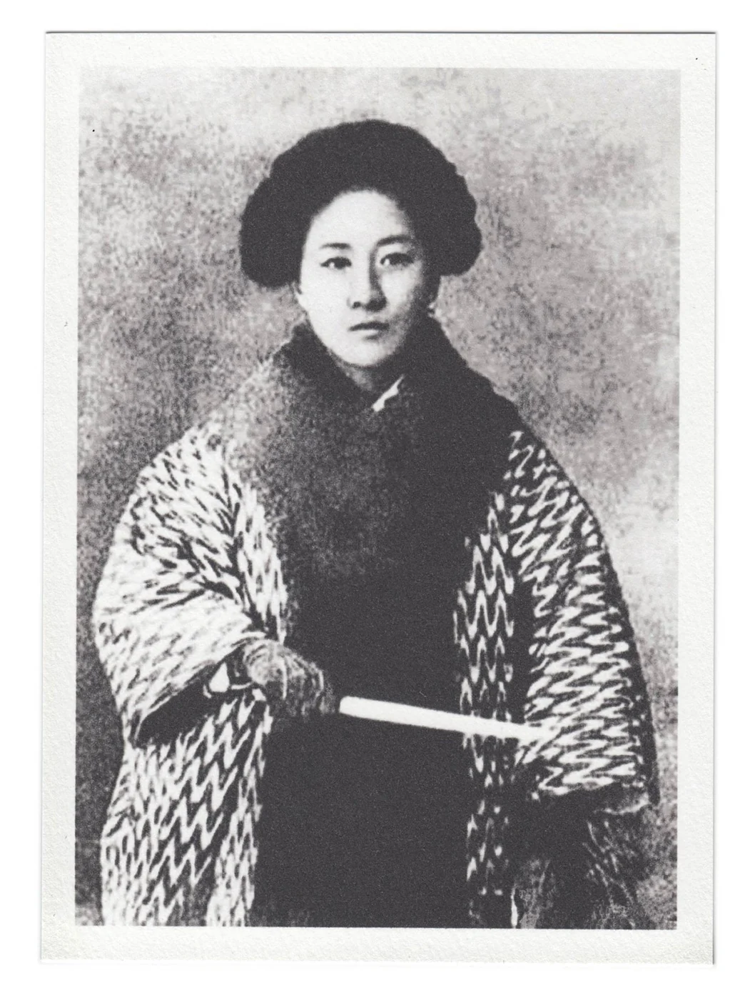
Qiu Jin (1875–1907) in Japanese dress with a dagger, photographed in Japan before 1907. Public domain, Wikimedia Commons.
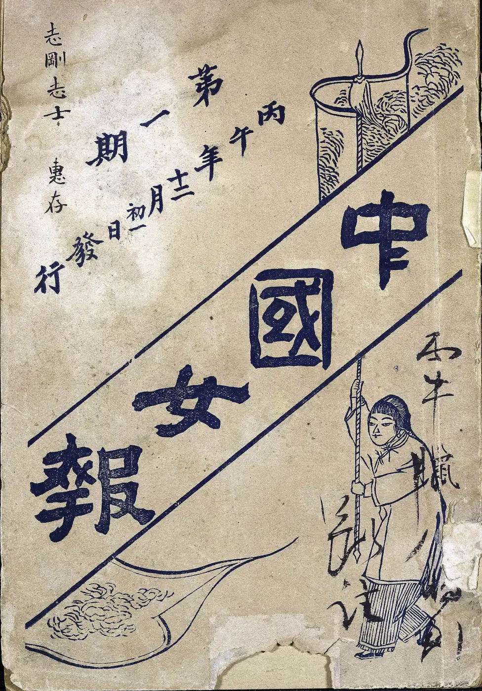
The first issue of the Chinese Women's Journal (Zhongguo nübao), Shanghai, January 1907. Public domain, Wikimedia Commons.
After the Boxer War and the foreign occupation of Beijing, she became an ardent nationalist.
In 1904 she left her marriage and went to study in Tokyo, where she learned to make bombs.
She attacked foot binding, arranged marriages, wife beating, and the cult of widow chastity.
Back in Shanghai, she founded the Chinese Women's Journal in early 1907.
Names in This Story
Qiu Jinrevolutionary and feminist, 1875–1907; pronounced "chyou jin"
Sources: Ebrey, Ch. 24, p. 426; Mary Backus Rankin, "The Emergence of Women at the End of the Ch'ing: The Case of Ch'iu Chin," in Women in Chinese Society (1975). Images: Japan, before 1907; Shanghai, 1907.
Q10 story · Shaoxing · July 1907
In July 1907 the Qing Executed Qiu Jin for Her Part in a Failed Uprising, and She Became a Martyr
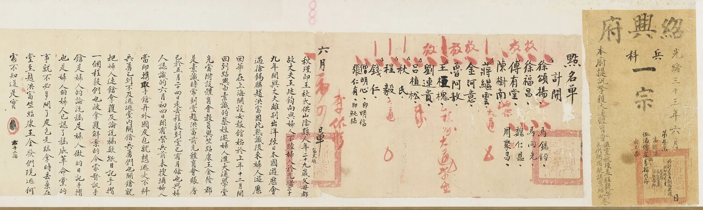
The record of Qiu Jin's statement to the Qing authorities after her arrest, July 1907. Public domain, Wikimedia Commons.
She headed the Datong school in Shaoxing, which secretly trained revolutionaries.
On 6 July 1907 her fellow plotter Xu Xilin shot the governor of Anhui; his rising failed.
Troops surrounded her school a week later; she was arrested and questioned.
On 15 July she was executed in Shaoxing, aged about 31.
Sources: Ebrey, Ch. 24, p. 426; Mary Backus Rankin, Early Chinese Revolutionaries (1971). Image: 1907.
Q10 story · The schools · 1907–1923
After the Qing Ordered Girls' Schools in 1907, Enrollment Rose About Twentyfold by 1919
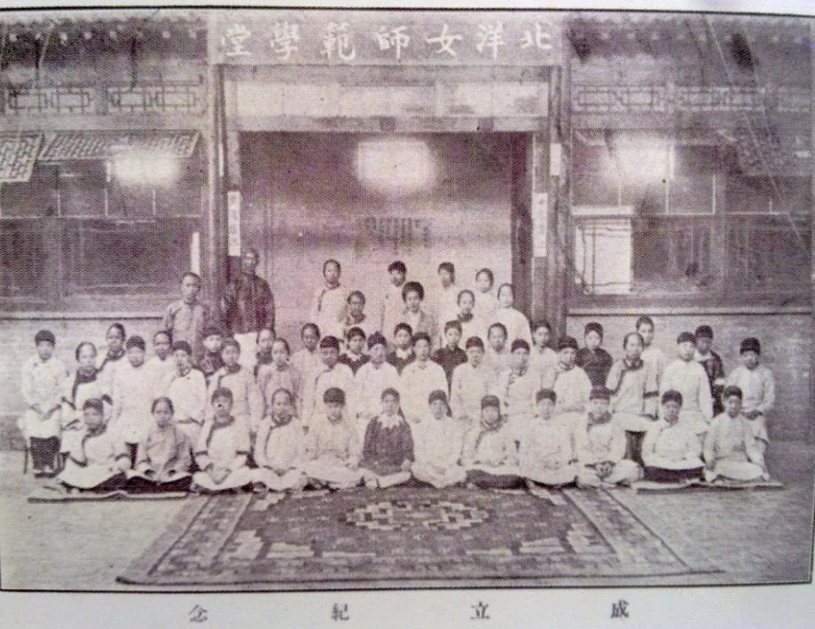
Teachers and students of the Beiyang Women's Normal School, Tianjin, 1912. Public domain, Wikimedia Commons.
1907: the Qing mandated schools for girls; 11,936 girls were in 391 primary schools.
1919: 215,626 primary pupils were girls, still far fewer than boys.
1922–23: 3,249 girls in middle schools, against 100,136 boys.
Schools let girls meet unrelated people respectably and led some to jobs.
Sources: Ebrey, Ch. 24, p. 426; Joan Judge, The Precious Raft of History: The Past, the West, and the Woman Question in China (2008). Image: Tianjin, 1912.
Q10 story · Lu Xun on women · 1918–1924
Lu Xun Attacked the Chastity Code, and in "The New Year's Sacrifice" a Poor Widow Ends Up Begging
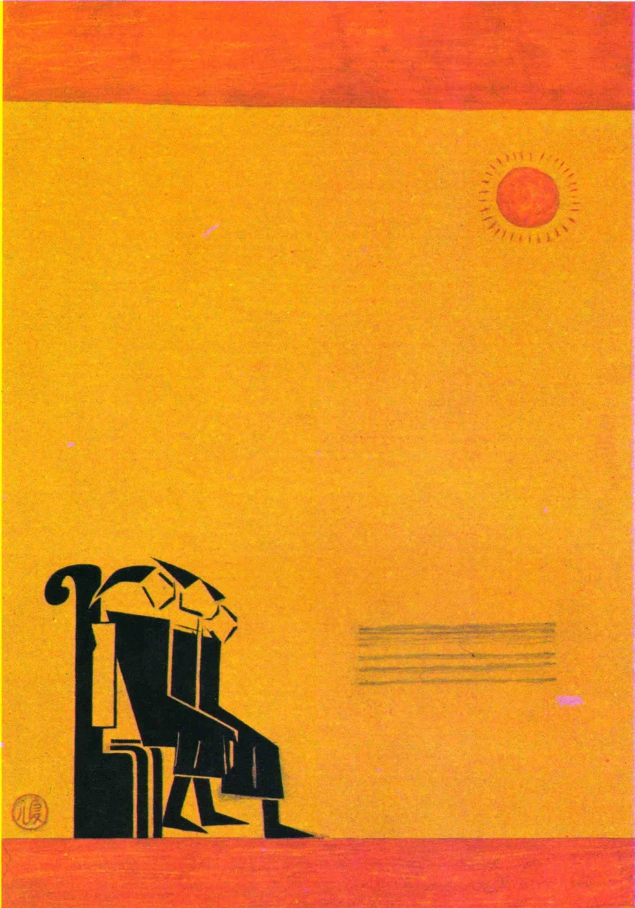
Panghuang (Wandering, 1926), the collection that includes "The New Year's Sacrifice." Cover by Tao Yuanqing. Public domain, Wikimedia Commons.
In 1918 he asked why no one wrote the life of a woman who killed herself after being raped.
Society honored only the woman who died to avoid it: one more sign of a cruel code.
In the 1924 story, a widow forced to remarry is called unlucky when her second husband dies.
She fears being split in two after death to serve two husbands.
Sources: Ebrey, Ch. 24, p. 427; Lu Xun, "My Views on Chastity," New Youth (1918). Image: Beixin shuju, 1926.
Q10 story · Ibsen in China · 1918–1923
After New Youth Printed A Doll's House in 1918, Young Women Asked Whether They Could Leave Home Like Nora
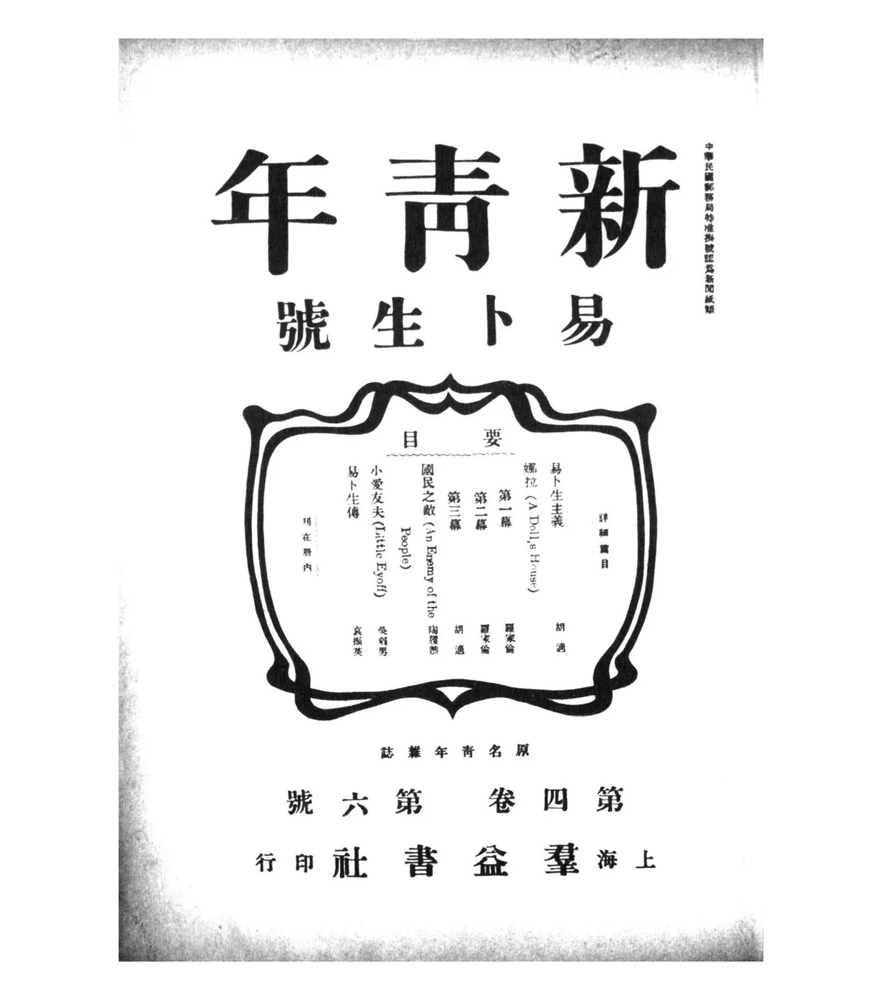
New Youth, vol. 4, no. 6, June 1918, the "Ibsen issue," with a translation of A Doll's House. From the 1954 facsimile edition. Public domain, Wikimedia Commons.
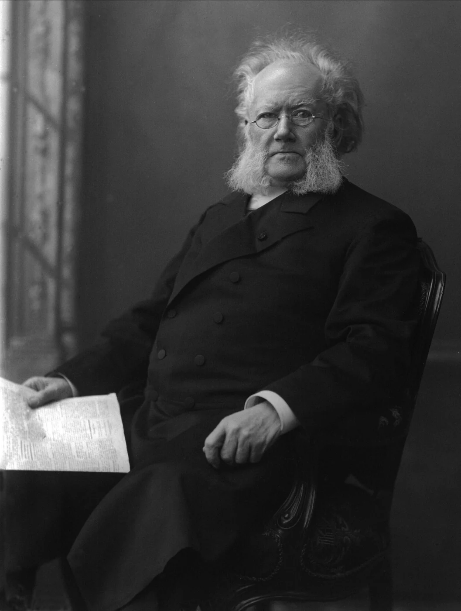
Henrik Ibsen (1828–1906), photographed by Gustav Borgen, 1898 or earlier. Public domain, Wikimedia Commons.
In June 1918 a special New Youth issue printed Ibsen's 1879 play in Chinese.
At the end, the wife, Nora, walks out on her husband and children to find herself.
The play was soon staged in many cities, and "Nora" became a word for a rebel daughter.
In 1923 Lu Xun asked students: what happens to Nora after she leaves, without money?
Names in This Story
Noraheroine of Ibsen's A Doll's House (1879); in Chinese, Nala
Sources: Ebrey, Ch. 24, p. 427; Lu Xun, "What Happens After Nora Leaves Home?" lecture at Beijing Women's Normal College, 26 December 1923. Images: 1918; 1898.
Q10 story · Law and the parties · 1912–1927
In the 1920s Both Parties Promised Equal Rights and Free Divorce, but Divorce Proved "the Trickiest Issue"
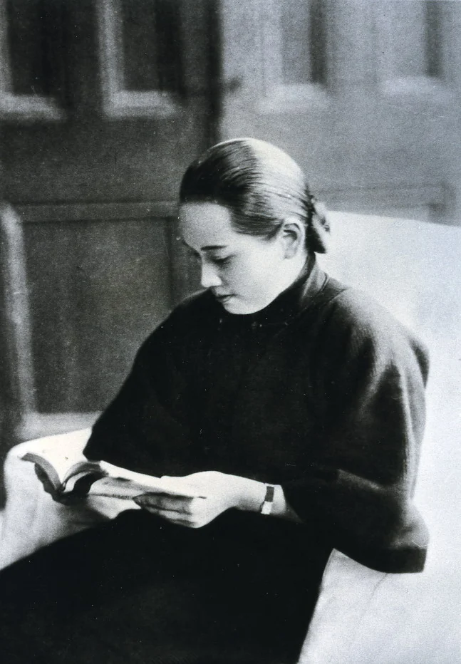
Song Qingling (1893–1981), widow of Sun Yatsen, in Wuhan, 1927. Public domain, Wikimedia Commons.
In 1912 women led by Tang Qunying demanded the vote from the provisional senate and lost.
In the 1920s the Nationalists and Communists set up women's departments.
Both called for equal rights and freedom of marriage and divorce.
When wives sought divorce, peasant husbands, who had paid for them, objected.
Names in This Story
Song Qinglingwidow of Sun Yatsen, 1893–1981; pronounced "sung ching-ling"
Sources: Ebrey, Ch. 24, pp. 427–428; Christina K. Gilmartin, Engendering the Chinese Revolution (1995). Image: Wuhan, 1927.
Q10 story · The villages · 1930s
In the Villages, Change Came Slowly: in the 1930s, Fewer Than 2 Percent of Rural Women Could Read
The new schools, jobs, and magazines were mostly in the cities.
A large survey of farm households in the 1930s measured who could read.
About 30 percent of the men could, and fewer than 2 percent of the women.
Most Chinese women still lived in a world their grandmothers would have known.
< 2%
rural women who could read, 1930s survey
30%
rural men who could read, same survey
Sources: Ebrey, Ch. 24, p. 426; John Lossing Buck, Land Utilization in China (1937).
Reading Guide · Review Question 10
Reading Guide · Review Question 10
Review Question 10
The Women's Movement and Social Change: How did the push for modernization redefine the social roles, educational opportunities, and legal status of Chinese women between 1900 and 1927?
Next: On 4 May 1919, Students Marched in Beijing Against the Treaty of Versailles
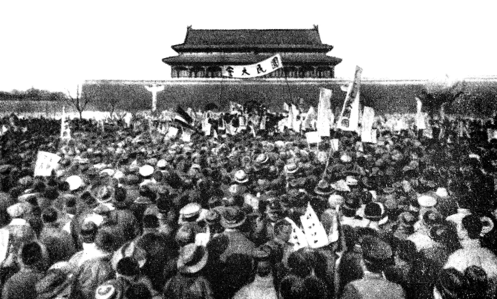
Students gather at the Gate of Heavenly Peace, Beijing, on 4 May 1919, to protest the Treaty of Versailles. Public domain, Wikimedia Commons.
The peace conference gave Germany's rights in Shandong to Japan, not to China.
Some three thousand Beijing students assembled at Tiananmen on 4 May 1919.
New Youth's readers became a movement · Ch. 24 L4 ↗
Sources: Ebrey, Ch. 24, p. 425. Image: Beijing, 4 May 1919.
Pierian Spring · Independent Study
Today's lecture ends here. Continue on your own: the stories below finish this chapter's history.
"A little learning is a dang'rous thing; Drink deep, or taste not the Pierian spring."Alexander Pope, An Essay on Criticism, 1711
Pierian Spring · Story · Vassar, Chicago, Beijing · 1914–1920
Sophia Chen Refused an Arranged Marriage, Studied at Vassar, and Became Beijing University's First Woman Professor
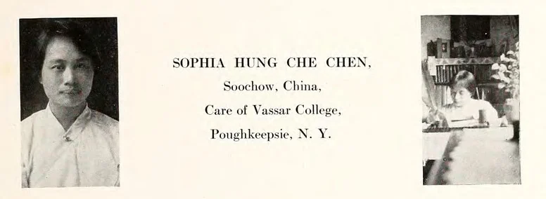
Sophia Hung Che Chen in the Vassar College yearbook, 1919. Public domain, Wikimedia Commons.
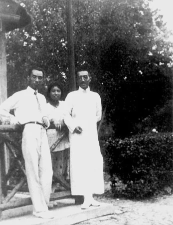
Sophia Chen with Hu Shi and H. C. Zen, 22 August 1920, the year she and Zen married. Public domain, Wikimedia Commons.
In her teens she talked her father out of the marriage he had arranged for her.
In 1914, aged 24, she won a Boxer Indemnity scholarship to study in the United States.
At Vassar she wrote "One Day" (1917), one of the first stories in vernacular Chinese.
After a Chicago master's degree, she was offered a Beijing University professorship in 1920.
Names in This Story
Sophia ChenChen Hengzhe, historian and writer, 1890–1976; pronounced "chuhn heng-juh"
Sources: Ebrey, Ch. 24, p. 424 (Biography: Sophia Chen and H. C. Zen); Denise Gimpel, Chen Hengzhe: A Life Between Orthodoxies (2015). Images: 1919; 1920.
Pierian Spring · Story · Tokyo, Cornell, Shanghai · 1905–1937
H. C. Zen Joined Sun Yatsen's Alliance, Studied Chemistry at Cornell, and Led the Science Society of China
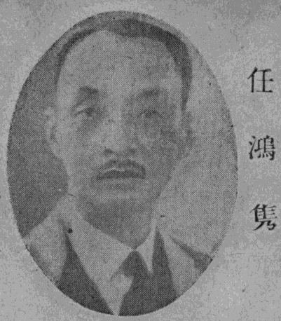
Ren Hongjun (H. C. Zen, 1886–1961). Public domain, Wikimedia Commons. Undated.
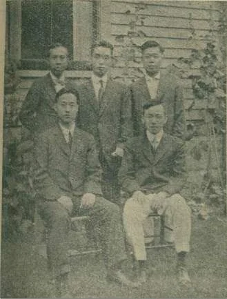
The board of the Science Society, 1915. Front: Zhao Yuanren, Zhou Ren. Back: Bing Zhi, Ren Hongjun, Hu Mingfu. Public domain, Wikimedia Commons.
He passed the first stage of the civil service exams just before they were abolished in 1905.
In Tokyo he joined Sun Yatsen's Revolutionary Alliance; in 1912 he was secretary to the president.
Opposing Yuan Shikai, he left to study chemistry at Cornell and Columbia, 1912–1917.
He was president of the Science Society of China, 1914–1923.
Names in This Story
H. C. ZenRen Hongjun, chemist and science organizer, 1886–1961; pronounced "run hung-jyun"
Sources: Ebrey, Ch. 24, p. 424 (Biography: Sophia Chen and H. C. Zen); Zuoyue Wang, "Saving China through Science: The Science Society of China," Osiris 17 (2002); Peter Buck, "Order and Control," Social Studies of Science 5 (1975). Images: undated; 1915.
Sources and image credits
The Stories in This Deck Rest on These Sources
Main source
Patricia Buckley Ebrey, A History of China, Chapter 24, "Remaking China (1900–1927)," pp. 422–428, with the Biography box (p. 424) and the Documents box "Sudden Notions" (p. 423). All page references in this deck are to these pages.
Primary-source reading: Lu Xun, "A Madman's Diary" (1918), trans. Yang Xianyi and Gladys Yang, online text (slides o, p).
Further reading beyond Ebrey
Chow Tse-tsung, The May Fourth Movement: Intellectual Revolution in Modern China (1960) (slides b–k).
Ssu-yü Teng and John K. Fairbank, China's Response to the West: A Documentary Survey, 1839–1923 (1954) (slide d).
Howard L. Boorman, ed., Biographical Dictionary of Republican China, vol. 1 (1967), "Ch'en Tu-hsiu"; Yves Chevrier, "De l'occidentalisme à la solitude: Chen Duxiu et l'invention de la modernité chinoise," Études chinoises 3 (1984), pp. 7–34 (slide c). Timothy B. Weston, The Power of Position: Beijing University, Intellectuals, and Chinese Political Culture, 1898–1929 (2004) (slide f).
Jerome B. Grieder, Hu Shih and the Chinese Renaissance (1970); John DeFrancis, Nationalism and Language Reform in China (1950) (slides g–i).
Lu Xun, Preface to Call to Arms (1922), in Selected Stories of Lu Hsun, trans. Yang Xianyi and Gladys Yang (1960); William A. Lyell, Lu Xun's Vision of Reality (1976) (slides m–q).
Lydia H. Liu, Translingual Practice: Literature, National Culture, and Translated Modernity (1995) (slide r).
Dorothy Ko, Cinderella's Sisters: A Revisionist History of Footbinding (2005) (slides u, v).
Mary Backus Rankin, Early Chinese Revolutionaries (1971) (slides w, x); Joan Judge, The Precious Raft of History (2008) (slide y).
Christina K. Gilmartin, Engendering the Chinese Revolution (1995) (slide bb); John Lossing Buck, Land Utilization in China (1937) (slide cc).
Hu Danian, China and Albert Einstein: The Reception of the Physicist and His Theory in China, 1917–1979 (2005) (slide j).
Denise Gimpel, Chen Hengzhe (2015); Zuoyue Wang, "Saving China through Science," Osiris 17 (2002); Peter Buck, "Order and Control: The Scientific Method in China and the United States," Social Studies of Science 5 (1975), n. 3 (slides gg, hh).
Images (real, via Wikimedia Commons, except n)
a, i, o, aa: New Youth covers, 1916–1918, from the 1954 facsimile edition (National Library of China scans). b: Qingnian zazhi, 1915. Public domain.
c: Chen Duxiu, undated. e: Beijing, 14 March 1920. f: Bain News Service, Library of Congress, about 1910. g: 1922. j: Shanghai, 1919. k: about 1917. Public domain.
m: Tokyo, 1903. q: Beijing, 1925. r: Arthur H. Smith, 1894. s: Beixin shuju, 1926 (CUHK scan). z: cover by Tao Yuanqing, 1926. Public domain.
u: Firmin Laribe, 1900s. v: C. H. Graves, about 1902. w: Qiu Jin, before 1907; Zhongguo nübao, 1907. x: 1907. y: Tianjin, 1912. Public domain.
aa: Gustav Borgen. bb: Wuhan, 1927. ee: Beijing, 4 May 1919. gg: Vassar yearbook, 1919; 1920. hh: Ren Hongjun; Science Society, 1915. Public domain.
n: AI-generated illustration made for this deck (2026); not a historical source.